ここでは、、メッセージキューに値を送信したり、受信したりという操作で情報をやりとりすると同時に、安全にスレッド間の同期をとることの出来るメッセージの機構について説明します。
メッセージキューの初期化
メッセージキューの初期化は OS_InitMessageQueue() で行ないます。
メッセージは OSMessage 型で、これは void* 型に typedef されています。NitroSDK
では 32bit のデータと考えても差し支えはありません。OS_InitMessageQueue() には、メッセージを実際に格納する OSMessage の配列領域を与えます。
メッセージキューは内部で以下のような構造になっています。
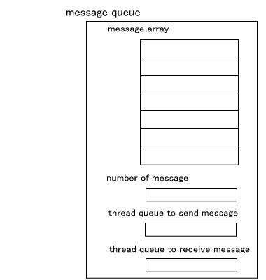
図の "message array" は OSMessage の配列でメッセージ領域です。この大きさはユーザが初期化時に指定します。この領域は FIFO ( First In First Out ) のキューとして用いられます。内部では、実際はリングバッファになっていてその制御のための変数が存在しますが、このページの説明では省いています。
図の "number of message" はメッセージ領域のなかの有効なメッセージ数です。初期化された直後は 0 です。
図の "thread queue to send message" と "thread queue to receive message" はメッセージ送信のためのスレッドキューとメッセージ受信のためのスレッドキューです。これについては後述します。
メッセージの送信
メッセージを送信する関数として、OS_SendMessage() が用意されています。
下の図は thread1 がメッセージを２回送信する様子を表しています。
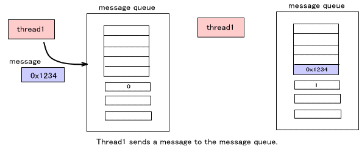
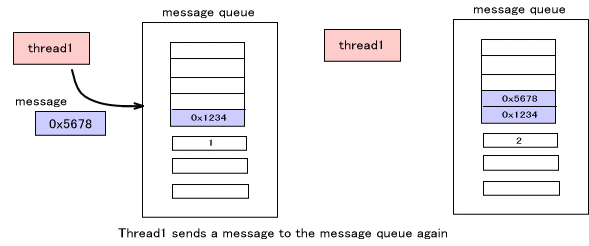
送信の際、BLOCKモードと NOBLOCKモードのいずれかのモードを指定します。メッセージキューが一杯でなければ両者に違いはありません。上の図のようにキューにメッセージが登録されるのみです。異なるのは、すでに一杯であるメッセージキューにメッセージを送信しようとしたときの挙動です。
・BLOCK モード
メッセージを送れるようになるまで、すなわちこのメッセージキューに対し他のスレッドが OS_ReceiveMessage() でメッセージを受信し、メッセージキューに空きが出来るまで、スレッドを一時停止状態にして待ちます。この時必ずスレッドのリスケジューリングが発生し、他のスレッドが実行状態になります。
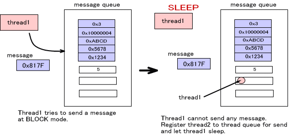
・NOBLOCK モード
メッセージを送れなくてもすぐに戻ります。関数からの返り値でメッセージを送れたかどうかを判断することが出来ます。
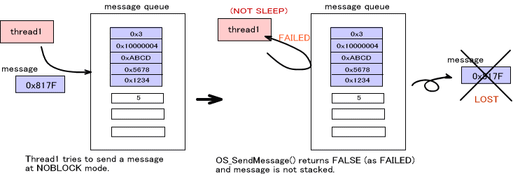
メッセージの受信
メッセージを受信する関数として、OS_ReceiveMessage() が用意されています。
下の図は thread2 がメッセージを２回受信する様子を表しています。受信するメッセージの順序は、このメッセージキューに送信された順序と同じです。すなわち、もっとも過去に送信されてまだメッセージキューに残っているものを受信します。
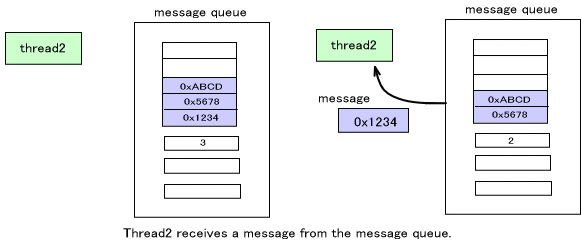
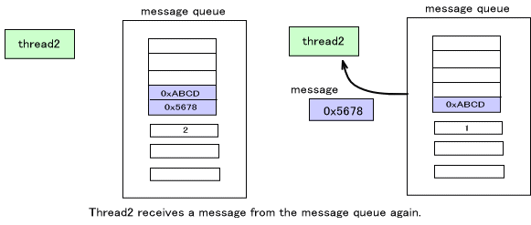
受信の際、BLOCKモードと NOBLOCKモードのいずれかのモードを指定します。メッセージキューが空でなければ両者に違いはありません。上の図のようにキューからメッセージを読み込むだけです。異なるのは、空であるメッセージキューからメッセージを受信しようとしたときの挙動です。
・BLOCK モード
メッセージを受け取れるようになるまで、すなわちこのメッセージキューに対し他のスレッドが OS_SendMessage() でメッセージを送信し、メッセージキューが空でなくなるまで、スレッドを一時停止状態にして待ちます。この時必ずスレッドのリスケジューリングが発生し、他のスレッドが実行状態になります。
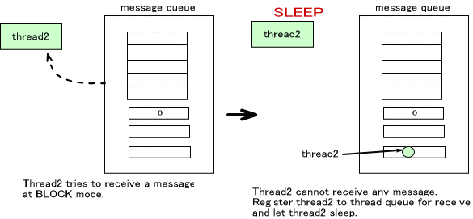
・NOBLOCK モード
メッセージを受け取れなくてもすぐに戻ります。関数からの返り値でメッセージを受け取れたかどうかを判断することが出来ます。
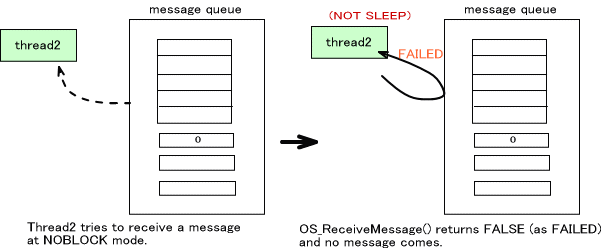
送受信でスレッドがリスケジューリングされる仕組み
下図は、thread1がメッセージキューに BLOCK モードでメッセージを送信しようとしましたが、メッセージキューが一杯であったために thread1 はスリープ状態になったところです。送信スレッドキューに thread1 が登録されていることに注意して下さい。
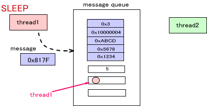
ここで、thread2 がメッセージを受信したとします。
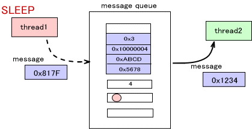
メッセージキューは、OS_ReceiveMessage() の際には、送信スレッドキューにスレッドが登録されていないかをチェックします。そして登録されているものがあれば、それらをすべて実行可能状態にします。現在 thread1 が登録されていますので、thread1 を実行可能状態にします。
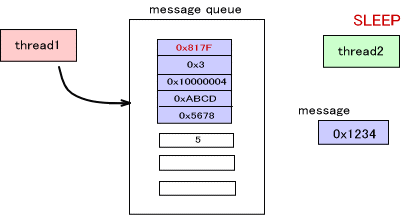
この状態でスレッドのリスケジューリングを行ないます。現在のスレッド(メッセージを受信しようとしているスレッド)と、実行可能状態にしたスレッドの中で最も優先度の高いスレッドが動作状態になります。図で、thread1 の方が thread2 より優先度が高ければ、メッセージを送り thread1 が実行状態になります。
逆に、OS_SendMessage() の際には、受信スレッドキューに登録されているスレッドを全て実行可能状態にしてリスケジューリングします。
メッセージキューには複数のスレッドが登録されている場合もあります。この場合でも、スレッドキューの仕組みを利用して、登録されているものを同時に実行可能状態にしてリスケジューリングします。
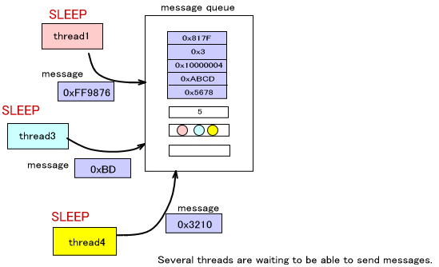
送信メッセージの割り込み
OS_SendMessage() でメッセージキューにメッセージを送信すると、OS_ReceivedMessage() で受信する際は送信された順に受け取ります。 しかし、送信時に、メッセージをメッセージキューの先頭に割り込ませる関数 OS_JamMessage() が用意されています。この関数にも、キューが一杯であった場合のモードを指定することが出来ます。
OS_JamMessage() に成功すると、そのメッセージが、次にこのメッセージキューから受信するメッセージということになります。
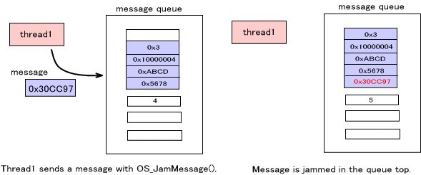
メッセージキューの参照
メッセージキューの先頭 ( 次に受信されるもの ) を参照するだけで、メッセージをキューに残したままにするための関数
OS_ReadMessage() が用意されています。この関数が原因となってスレッドの切り替わりが発生することはありませんし、メッセージキューの内部状態は変化しません。
2004/12/15 用語や語尾など修正
2004/11/10 初版